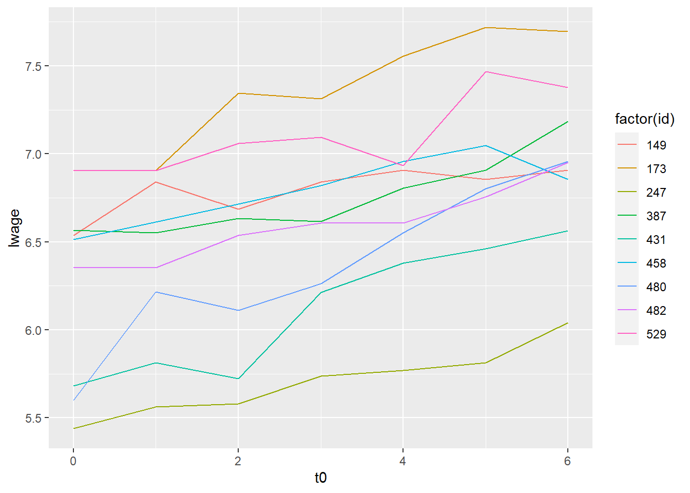

library(tidyverse)
library(panelr)
library(gapminder)
library(ggeffects)
library(lme4)
set.seed(53)HW10
setup
10.1 Reshaping
gap_wide <- gapminder::gapminder |>
select(continent, country, year, lifeExp, gdpPercap) |>
pivot_wider(
names_from = year,
values_from = c(lifeExp, gdpPercap),
names_sep = ""
)
glimpse(gap_wide)Rows: 142
Columns: 26
$ continent <fct> Asia, Europe, Africa, Africa, Americas, Oceania, Europe,…
$ country <fct> "Afghanistan", "Albania", "Algeria", "Angola", "Argentin…
$ lifeExp1952 <dbl> 28.801, 55.230, 43.077, 30.015, 62.485, 69.120, 66.800, …
$ lifeExp1957 <dbl> 30.33200, 59.28000, 45.68500, 31.99900, 64.39900, 70.330…
$ lifeExp1962 <dbl> 31.99700, 64.82000, 48.30300, 34.00000, 65.14200, 70.930…
$ lifeExp1967 <dbl> 34.02000, 66.22000, 51.40700, 35.98500, 65.63400, 71.100…
$ lifeExp1972 <dbl> 36.08800, 67.69000, 54.51800, 37.92800, 67.06500, 71.930…
$ lifeExp1977 <dbl> 38.43800, 68.93000, 58.01400, 39.48300, 68.48100, 73.490…
$ lifeExp1982 <dbl> 39.854, 70.420, 61.368, 39.942, 69.942, 74.740, 73.180, …
$ lifeExp1987 <dbl> 40.822, 72.000, 65.799, 39.906, 70.774, 76.320, 74.940, …
$ lifeExp1992 <dbl> 41.674, 71.581, 67.744, 40.647, 71.868, 77.560, 76.040, …
$ lifeExp1997 <dbl> 41.763, 72.950, 69.152, 40.963, 73.275, 78.830, 77.510, …
$ lifeExp2002 <dbl> 42.129, 75.651, 70.994, 41.003, 74.340, 80.370, 78.980, …
$ lifeExp2007 <dbl> 43.828, 76.423, 72.301, 42.731, 75.320, 81.235, 79.829, …
$ gdpPercap1952 <dbl> 779.4453, 1601.0561, 2449.0082, 3520.6103, 5911.3151, 10…
$ gdpPercap1957 <dbl> 820.8530, 1942.2842, 3013.9760, 3827.9405, 6856.8562, 10…
$ gdpPercap1962 <dbl> 853.1007, 2312.8890, 2550.8169, 4269.2767, 7133.1660, 12…
$ gdpPercap1967 <dbl> 836.1971, 2760.1969, 3246.9918, 5522.7764, 8052.9530, 14…
$ gdpPercap1972 <dbl> 739.9811, 3313.4222, 4182.6638, 5473.2880, 9443.0385, 16…
$ gdpPercap1977 <dbl> 786.1134, 3533.0039, 4910.4168, 3008.6474, 10079.0267, 1…
$ gdpPercap1982 <dbl> 978.0114, 3630.8807, 5745.1602, 2756.9537, 8997.8974, 19…
$ gdpPercap1987 <dbl> 852.3959, 3738.9327, 5681.3585, 2430.2083, 9139.6714, 21…
$ gdpPercap1992 <dbl> 649.3414, 2497.4379, 5023.2166, 2627.8457, 9308.4187, 23…
$ gdpPercap1997 <dbl> 635.3414, 3193.0546, 4797.2951, 2277.1409, 10967.2820, 2…
$ gdpPercap2002 <dbl> 726.7341, 4604.2117, 5288.0404, 2773.2873, 8797.6407, 30…
$ gdpPercap2007 <dbl> 974.5803, 5937.0295, 6223.3675, 4797.2313, 12779.3796, 3…Changing gap_wide into gap_long
gap_long <- long_panel(gap_wide, prefix = "", begin = 1952, end = 2007, id = "country", wave = "year", label_location = "end") |> drop_na()
# this was probably not the most code-efficient way to do this, but it worked
glimpse(gap_long)Rows: 1,704
Columns: 5
Groups: country [142]
$ country <fct> "Afghanistan", "Afghanistan", "Afghanistan", "Afghanistan", …
$ year <dbl> 1952, 1957, 1962, 1967, 1972, 1977, 1982, 1987, 1992, 1997, …
$ continent <fct> Asia, Asia, Asia, Asia, Asia, Asia, Asia, Asia, Asia, Asia, …
$ lifeExp <dbl> 28.801, 30.332, 31.997, 34.020, 36.088, 38.438, 39.854, 40.8…
$ gdpPercap <dbl> 779.4453, 820.8530, 853.1007, 836.1971, 739.9811, 786.1134, …Changing gap_long back to wide!
gap_wide <- widen_panel(gap_long)
glimpse(gap_wide)Rows: 142
Columns: 26
$ country <fct> "Afghanistan", "Albania", "Algeria", "Angola", "Argenti…
$ continent <fct> Asia, Europe, Africa, Africa, Americas, Oceania, Europe…
$ lifeExp_1952 <dbl> 28.801, 55.230, 43.077, 30.015, 62.485, 69.120, 66.800,…
$ gdpPercap_1952 <dbl> 779.4453, 1601.0561, 2449.0082, 3520.6103, 5911.3151, 1…
$ lifeExp_1957 <dbl> 30.33200, 59.28000, 45.68500, 31.99900, 64.39900, 70.33…
$ gdpPercap_1957 <dbl> 820.8530, 1942.2842, 3013.9760, 3827.9405, 6856.8562, 1…
$ lifeExp_1962 <dbl> 31.99700, 64.82000, 48.30300, 34.00000, 65.14200, 70.93…
$ gdpPercap_1962 <dbl> 853.1007, 2312.8890, 2550.8169, 4269.2767, 7133.1660, 1…
$ lifeExp_1967 <dbl> 34.02000, 66.22000, 51.40700, 35.98500, 65.63400, 71.10…
$ gdpPercap_1967 <dbl> 836.1971, 2760.1969, 3246.9918, 5522.7764, 8052.9530, 1…
$ lifeExp_1972 <dbl> 36.08800, 67.69000, 54.51800, 37.92800, 67.06500, 71.93…
$ gdpPercap_1972 <dbl> 739.9811, 3313.4222, 4182.6638, 5473.2880, 9443.0385, 1…
$ lifeExp_1977 <dbl> 38.43800, 68.93000, 58.01400, 39.48300, 68.48100, 73.49…
$ gdpPercap_1977 <dbl> 786.1134, 3533.0039, 4910.4168, 3008.6474, 10079.0267, …
$ lifeExp_1982 <dbl> 39.854, 70.420, 61.368, 39.942, 69.942, 74.740, 73.180,…
$ gdpPercap_1982 <dbl> 978.0114, 3630.8807, 5745.1602, 2756.9537, 8997.8974, 1…
$ lifeExp_1987 <dbl> 40.822, 72.000, 65.799, 39.906, 70.774, 76.320, 74.940,…
$ gdpPercap_1987 <dbl> 852.3959, 3738.9327, 5681.3585, 2430.2083, 9139.6714, 2…
$ lifeExp_1992 <dbl> 41.674, 71.581, 67.744, 40.647, 71.868, 77.560, 76.040,…
$ gdpPercap_1992 <dbl> 649.3414, 2497.4379, 5023.2166, 2627.8457, 9308.4187, 2…
$ lifeExp_1997 <dbl> 41.763, 72.950, 69.152, 40.963, 73.275, 78.830, 77.510,…
$ gdpPercap_1997 <dbl> 635.3414, 3193.0546, 4797.2951, 2277.1409, 10967.2820, …
$ lifeExp_2002 <dbl> 42.129, 75.651, 70.994, 41.003, 74.340, 80.370, 78.980,…
$ gdpPercap_2002 <dbl> 726.7341, 4604.2117, 5288.0404, 2773.2873, 8797.6407, 3…
$ lifeExp_2007 <dbl> 43.828, 76.423, 72.301, 42.731, 75.320, 81.235, 79.829,…
$ gdpPercap_2007 <dbl> 974.5803, 5937.0295, 6223.3675, 4797.2313, 12779.3796, …10.2 Line Plot
gapminder graph for a random subset of 10 countries
gap_slice <- gap_long %>%
group_by(country) |>
nest() |>
ungroup() |>
slice_sample(n = 10) |>
unnest(cols = c(data))
ggplot(gap_slice, aes(x = year, y = lifeExp, color = country)) +
geom_line()10.3 ICC
LifeExp
lifeExp_icc <- lmer(lifeExp ~ (1 | country),
data = gapminder,
REML = FALSE)
summary(lifeExp_icc)Linear mixed model fit by maximum likelihood ['lmerMod']
Formula: lifeExp ~ (1 | country)
Data: gapminder
AIC BIC logLik deviance df.resid
11904.1 11920.4 -5949.0 11898.1 1701
Scaled residuals:
Min 1Q Median 3Q Max
-3.03671 -0.61927 0.09445 0.66708 2.49420
Random effects:
Groups Name Variance Std.Dev.
country (Intercept) 119.40 10.927
Residual 47.36 6.882
Number of obs: 1704, groups: country, 142
Fixed effects:
Estimate Std. Error t value
(Intercept) 59.474 0.932 63.81# ICC of lifeExp
119.40 / (119.40 + 47.36)[1] 0.715999pop
pop_icc <- lmer(pop ~ (1 | country),
data = gapminder,
REML = FALSE)
summary(pop_icc)Linear mixed model fit by maximum likelihood ['lmerMod']
Formula: pop ~ (1 | country)
Data: gapminder
AIC BIC logLik deviance df.resid
64464.1 64480.4 -32229.0 64458.1 1701
Scaled residuals:
Min 1Q Median 3Q Max
-12.1266 -0.0542 -0.0087 0.0352 12.7742
Random effects:
Groups Name Variance Std.Dev.
country (Intercept) 1.021e+16 101031917
Residual 1.055e+15 32487495
Number of obs: 1704, groups: country, 142
Fixed effects:
Estimate Std. Error t value
(Intercept) 29601212 8514859 3.476# ICC of pop
10210000000000000 / (10210000000000000 + 1055000000000000)[1] 0.9063471gdpPercap
gdpPercap_icc <- lmer(gdpPercap ~ (1 | country),
data = gapminder,
REML = FALSE)
summary(gdpPercap_icc)Linear mixed model fit by maximum likelihood ['lmerMod']
Formula: gdpPercap ~ (1 | country)
Data: gapminder
AIC BIC logLik deviance df.resid
34543.8 34560.1 -17268.9 34537.8 1701
Scaled residuals:
Min 1Q Median 3Q Max
-6.6831 -0.1807 -0.0377 0.1164 9.4757
Random effects:
Groups Name Variance Std.Dev.
country (Intercept) 69177620 8317
Residual 27934767 5285
Number of obs: 1704, groups: country, 142
Fixed effects:
Estimate Std. Error t value
(Intercept) 7215.3 709.6 10.17# ICC of gdpPercap
69177620 / (69177620 + 27934767) [1] 0.71234610.4 WageData analysis
data("WageData", package = "panelr")
WageData <- WageData |>
mutate(
college = if_else(ed >= 16, 1L, 0L), # college variable
t0 = t - 1 # start time at 0
)Log wage as a function of college and time
mod1 = lmer(lwage ~ college + 0 + (1 | id),
data = WageData,
REML = FALSE)
summary(mod1)Linear mixed model fit by maximum likelihood ['lmerMod']
Formula: lwage ~ college + 0 + (1 | id)
Data: WageData
AIC BIC logLik deviance df.resid
5409.3 5428.3 -2701.6 5403.3 4162
Scaled residuals:
Min 1Q Median 3Q Max
-7.2970 -0.6133 0.0369 0.6679 7.4981
Random effects:
Groups Name Variance Std.Dev.
id (Intercept) 31.55136 5.6171
Residual 0.06741 0.2596
Number of obs: 4165, groups: id, 595
Fixed effects:
Estimate Std. Error t value
college 6.933 0.440 15.76Log wage as a function of college and a random slope on time
mod2 = lmer(lwage ~ college + t0 + (1 + t0 | id),
data = WageData,
REML = FALSE)
summary(mod2)Linear mixed model fit by maximum likelihood ['lmerMod']
Formula: lwage ~ college + t0 + (1 + t0 | id)
Data: WageData
AIC BIC logLik deviance df.resid
-1975.2 -1930.8 994.6 -1989.2 4158
Scaled residuals:
Min 1Q Median 3Q Max
-13.1426 -0.3160 0.0119 0.3403 14.5525
Random effects:
Groups Name Variance Std.Dev. Corr
id (Intercept) 0.123378 0.35125
t0 0.001231 0.03509 -0.09
Residual 0.017816 0.13348
Number of obs: 4165, groups: id, 595
Fixed effects:
Estimate Std. Error t value
(Intercept) 6.295819 0.017369 362.47
college 0.327542 0.032736 10.01
t0 0.096933 0.001772 54.72
Correlation of Fixed Effects:
(Intr) colleg
college -0.516
t0 -0.164 0.000Log wage as a function of college and a random slope and time as a quadratic
mod3 = lmer(lwage ~ college + (1 + t0 + I(t0^2) | id),
data = WageData,
REML = FALSE)Warning in checkConv(attr(opt, "derivs"), opt$par, ctrl = control$checkConv, :
Model failed to converge with max|grad| = 0.0580445 (tol = 0.002, component 1)summary(mod3)Linear mixed model fit by maximum likelihood ['lmerMod']
Formula: lwage ~ college + (1 + t0 + I(t0^2) | id)
Data: WageData
AIC BIC logLik deviance df.resid
-1001.2 -944.2 509.6 -1019.2 4156
Scaled residuals:
Min 1Q Median 3Q Max
-13.4360 -0.2923 0.0127 0.3117 14.1022
Random effects:
Groups Name Variance Std.Dev. Corr
id (Intercept) 0.1445117 0.38015
t0 0.0192641 0.13880 -0.34
I(t0^2) 0.0001014 0.01007 0.00 -0.73
Residual 0.0161121 0.12693
Number of obs: 4165, groups: id, 595
Fixed effects:
Estimate Std. Error t value
(Intercept) 6.45097 0.01683 383.382
college 0.31222 0.03215 9.712
Correlation of Fixed Effects:
(Intr)
college -0.523
optimizer (nloptwrap) convergence code: 0 (OK)
Model failed to converge with max|grad| = 0.0580445 (tol = 0.002, component 1)Compare model BICs
BIC(mod1, mod2, mod3) df BIC
mod1 3 5428.2804
mod2 7 -1930.8224
mod3 9 -944.2103mod2 seems best? I’m not sure if I’ve encountered negative BICs before
Effect of college on log wages
summary(mod2)Linear mixed model fit by maximum likelihood ['lmerMod']
Formula: lwage ~ college + t0 + (1 + t0 | id)
Data: WageData
AIC BIC logLik deviance df.resid
-1975.2 -1930.8 994.6 -1989.2 4158
Scaled residuals:
Min 1Q Median 3Q Max
-13.1426 -0.3160 0.0119 0.3403 14.5525
Random effects:
Groups Name Variance Std.Dev. Corr
id (Intercept) 0.123378 0.35125
t0 0.001231 0.03509 -0.09
Residual 0.017816 0.13348
Number of obs: 4165, groups: id, 595
Fixed effects:
Estimate Std. Error t value
(Intercept) 6.295819 0.017369 362.47
college 0.327542 0.032736 10.01
t0 0.096933 0.001772 54.72
Correlation of Fixed Effects:
(Intr) colleg
college -0.516
t0 -0.164 0.000A college degree should increase an individual’s log earnings by 0.327 (or roughly 25%?), according to this model.
Predictions of a sample of 9 individuals over time
WageData$pred_lwage = predict(mod2)
wage_slice <- WageData %>%
group_by(id) |>
nest() |>
ungroup() |>
slice_sample(n = 9) |>
unnest(cols = c(data))
ggplot(wage_slice, aes(x = t0, y = pred_lwage, color = factor(id))) +
geom_line()Comparing my predictions to actual lwage for fun
ggplot(wage_slice, aes(x = t0, y = lwage, color = factor(id))) +
geom_line()
Seems like pretty decent predictions!